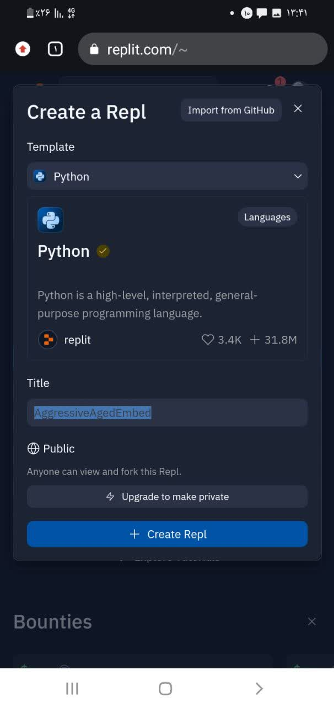

General description
In the name of Allah . First of all, I must say that in this project that I presented to you, I did several things. First of all, I found a new formula for the area of the sphere, and to show the performance of this formula, the answers to the questions are the same with both the new formula and the original formula. I will show it and then I designed this website to give a general explanation. pi* As you know, the main formula for the area of a sphere is: Radius * Radius * 4
(New formula: (diameter*3/14 * (diameter-1))+(diameter*3/14
This formula is apparently more difficult than the original formula and complicates the work, but if I explain it, you will see that it is easier. First of all, they give us the radius to calculate the area of the sphere. Now we multiply the radius by 2 to get the diameter. We multiply the diameter by the pi number, which we consider to be 3/14, then we keep the result of this part, then in the next parenthesis, we just multiply the result of the previous expression by the minus one and add it to the result of the first parenthesis.
How to set up

In the first step, I entered the replit.com site, which has a free host to run various programs, including the Telegram bot.
In the second step, we click on the create repl button, then a page will appear where you can choose your programming language and a project will be created for you.

Now, in the last step, we just need to write or upload our source code in the main.py file, then click on the run button, and our robot will be launched. Now, how was our robot launched? Through the bot token we got earlier from botfader
Introducing a similar robot
Now this robot that I want to introduce to you, I also made it myself, but I started this robot without coding and through the free hosting of the data space-canva website, and this robot has limitations and is in Persian language, and only the area of spheres with a radius of one It counts up to ten
Similar robot
Comments